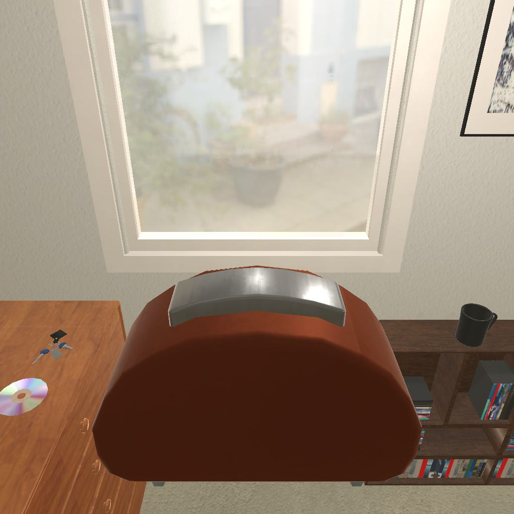
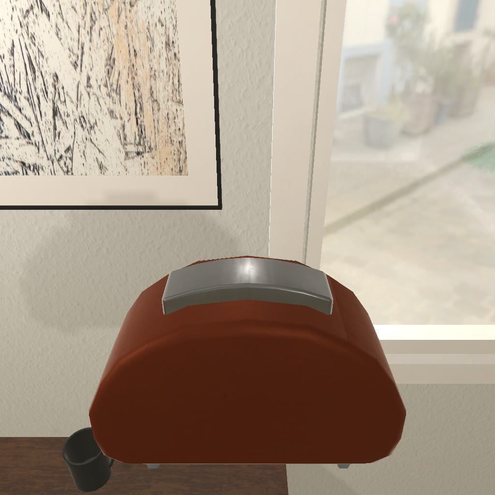

---------------------------------------------------------task: 1---------------------------------------------------------
--------------------------------------------------------------------------------------------------------------------------------------------------------------------
--------------------------------------------------------------------------------------------------------------------------------------------------------------------
Step:--------------------------------------------------------------------------6-------------------------------------------------------------------------------
----------------------------------------
VLM Prompt:
Image1:
Image2:
Image3:
**Instruction**
1. Analyze the provided images to identify all visible household objects and compare the difference between images (e.h. whether the object is opened or not and taken on hand or not), focusing on those relevant to the task description "examine the alarmclock with the desklamp."
2. Use the analysis of images and the task hint "The agent must find an object of the desired type, locate and turn on a light source with the desired object in-hand." to answer the question: what is the most reasonable action in the choices for the task description "examine the alarmclock with the desklamp"?
3. Decide and write the answer using the template: The answer is: (i): , where i is the real number. If there is no desired object in images, search every place based on **Initial Observation** to find the object. And if no one is exactly correct, choose a similar answer.
**Initial Observation**
You are in the middle of a room. Looking quickly around you, you can see bed (1), dresser (1), drawer (1-10), garbagecan (1), shelf (1-7)
**Answer Choices**
(1): go to bed 1
(2): go to dresser 1
(3): go to drawer 1
(4): go to drawer 2
(5): go to drawer 3
(6): go to drawer 4
(7): go to drawer 5
(8): go to garbagecan 1
(9): go to drawer 6
(10): go to drawer 7
(11): go to drawer 8
(12): go to drawer 9
(13): go to drawer 10
(14): go to shelf 4
(15): go to shelf 5
(16): go to shelf 6
(17): go to shelf 7
(18): put alarmclock 1 in/on shelf 1
(19): examine alarmclock 1
(20): examine shelf 1
**Answer**
Let's think step by step by following the instructions.
----------------------------------------
----------------------------------------
Original Response:
Firstly, we analyze the images provided. In all three images, we can see an alarm clock on a desk next to a window. The alarm clock appears to be closed in all images, and there is no visible light source turned on in the room. The desk also has a mug, some books, and a CD, but these are not relevant to our task. There is no desk lamp visible in the images.
Based on the task description "examine the alarmclock with the desklamp," we need to find a desklamp to examine the alarm clock properly. The task hint indicates that we must find a light source and turn it on while having the desired object (alarm clock) in hand.
Since there is no desklamp visible in the images, we refer to the **Initial Observation** for potential locations to search for the desklamp. The most reasonable places to look for a desklamp would be on the dresser, shelves, or drawers, as these are common places where a desklamp might be placed or stored.
The answer is: (2): go to dresser 1
----------------------------------------
----------------------------------------
>>> Refine Original VLM Response and Get Pure Action: go to dresser 1
----------------------------------------
-----------------------------------------------------------------
Running time: 10.827758312225342 seconds
Total Money: 0.6300799999999999
-----------------------------------------------------------------
-----------------------------------------------------------------
Text Observation:You arrive at loc 1. On the dresser 1, you see a desklamp 1, a laptop 1, a keychain 1, a cd 1, and a pen 1.
-----------------------------------------------------------------
UNSUCCEED